amy d
 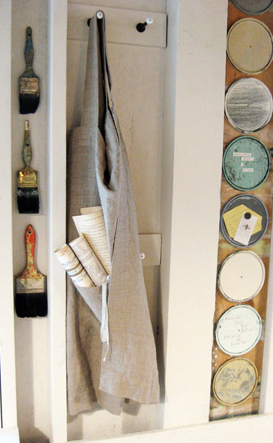
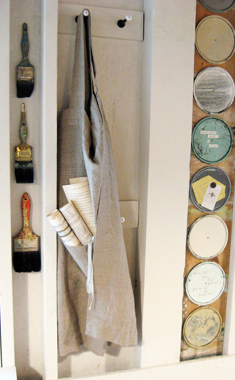
Natural, simple, down to earth…describe both me and my Rough Linen pinafore. I'm a multi-media collage artist, creating original creations from vintage materials and leftover remnants and detritus…I put to good use the stuff that others throw away. From the moment I saw the pinafore, I knew that it would be perfect for me…I am not one to fuss with clothes so its easy lines and refined construction won me over. As you look around my workshop, its clear that natural elements and neutral colors reflect my style. I like to be very comfortable when I'm composing collages…the large pockets are great for holding my scissors and glue…and my rag towel. I have always loved natural fibers — wool, cotton, linen — in both my home and my studio…nothing artificial here…my pinafore is a perfect fit in so many ways…
 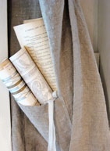
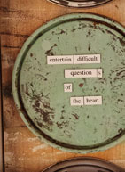
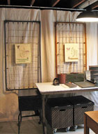
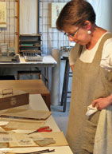
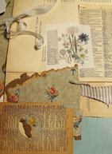
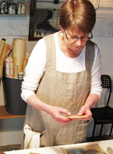
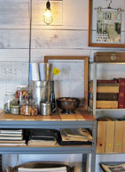
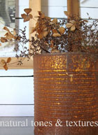
check out amy's blog here – four corners design
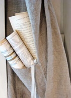
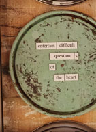
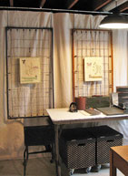
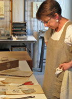
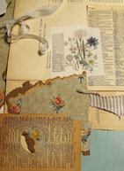
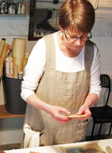
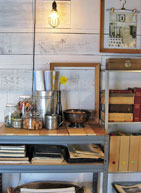
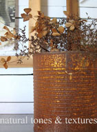
check out amy's blog here – four corners design